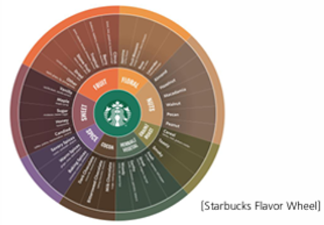

arrow_back
문제 빌더
· 커피품질서비스 고급
cloud_done
임시저장됨
미리보기
check
문제은행에 저장
tune
시험 설정
시험(시험지) 단위
같은 시험에 속한 모든 문항에 공통 적용됩니다.
과정 / 자격
합격 기준
컷오프 단일
채점 방식
점장 1인
2인 교차
edit_document
문항 설정
문항 단위
문제마다 따로 설정합니다. 제한 시간도 문항별로 둡니다.
문항 유형
서술형 수행과제
단답
객관식
서술형 문항에
자료 첨부 · 작성가이드 · 제한시간
을 더한 형태입니다.
제한 시간
이 문항
배점
문항 제목
수행 목표
오늘의 커피(브루드)를 테이스팅하고, 내부 자료를 활용해 향·맛·바디·로스팅 단계를 전문가적 센서리 언어로 표현한다.
format_list_numbered
작성가이드 (단계)
응시자에게 단계별로 안내됩니다.
1
준비
— 브루드 커피(오늘의 커피)와 내부 자료를 준비한다.
2
Smell (아로마 맡기)
— 컵을 코 가까이 가져가 깊게 흡입하고, 감지되는 향을 내부 자료를 참고해 기록한다.
3
Slurp (후루룩 마시기)
— 공기와 함께 강하게 흡입해 향기 분자를 입안 전체로 퍼뜨린다.
4
Locate (머금고 즐기기)
— 입에 머금고 혀 전체로 굴려 맛 성분과 질감을 평가한다.
5
Describe (표현하기)
— 앞서 감지한 향과 맛을 종합해 서술한다.
6
자기 점검
— 어려웠던 향/맛, 확신·불확실했던 부분, 개선점을 정리한다.
add
단계 추가
attachment
첨부 자료
응시 화면 좌측에 함께 노출됩니다.

내부 자료.png
문제 지문에 함께 노출 · 채점 사전과 연결됨
swap_horiz
교체
rule
채점 루브릭 (체크포인트 · 배점)
응시자에겐 "과제 작성 가이드"로, 채점에선 배점 기준으로 쓰입니다. AI 1차가 충족 여부·코멘트 초안을 내고
점수 확정은 채점자
가 합니다.
check
내부 자료 기반으로 향을
2가지 이상
표현
20점
check
단맛 · 신맛 · 쓴맛 · 바디감을 모두 표현
20점
check
블론드 · 미디엄 · 다크 로스팅 단계 판별
15점
check
산미 · 바디감을 로스팅 단계와 연결
15점
check
해당 원두와 일치하는 풍미 표현
15점
check
‘좋다/나쁘다’ 대신 구체적 향·맛으로 표현
15점
add
체크포인트 추가
verified
모범답안 (채점 참고)
오늘의 커피는 견과류·카카오 계열의 고소한 향에 은은한 베리 산미가 어우러진다. 바디는 중간, 산미는 부드럽고 쓴맛은 절제돼 있어 산미–바디의 균형으로 보아 미디엄 로스팅으로 판단된다. 전반적으로 고소함과 산미가 조화로운 깔끔한 여운의 커피다.
visibility
응시자 화면 미리보기
30:00
서술형 수행과제
오늘의 커피 테이스팅 — 향미 표현하기
내부 자료를 활용해 오늘의 커피의 향·맛·바디·로스팅 단계를 센서리 언어로 표현하세요.
내부 자료
작성가이드 6단계 · 채점 루브릭 6개 · 제한시간 30분
왼쪽 입력이 실시간 반영되는 형태(개념)